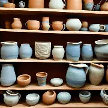
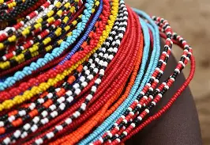
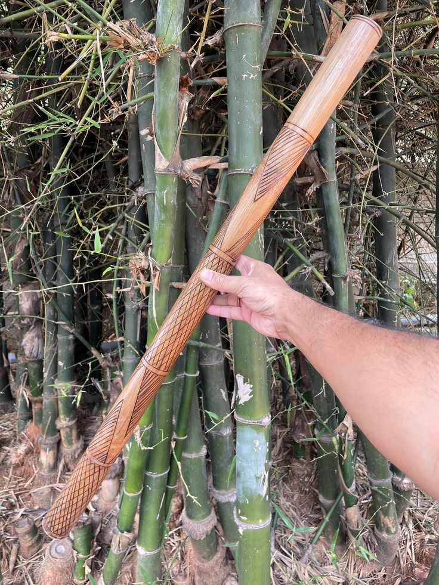
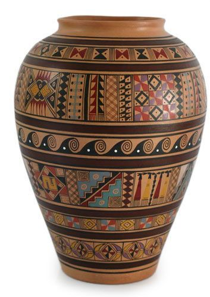
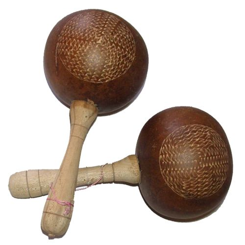
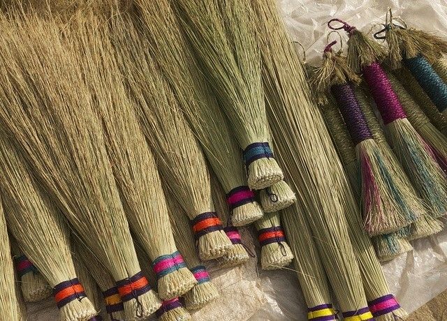
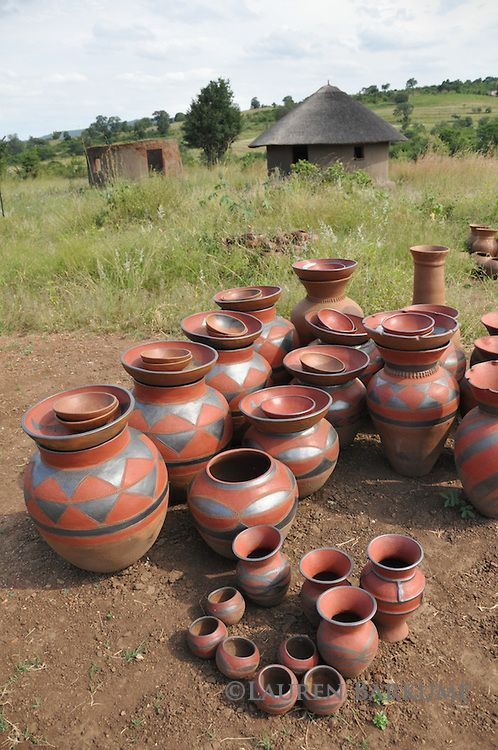

woven basket
Basket weaving was a vital craft in ancient
civilizations, serving both practical and
cultural purposes.

Pottery
Pottery is the craft of shaping and firing clay
into functional or decorative objects such
as pots, bowls,
or ceremonial vessels.

Beadwork
Beadwork involves stringing or sewing small beads
made of glass, clay, bone, or other materials into intricate
patterns on text.

seletsoa
Celestia is a modular
blockchain that serves as a data availability and
consensus layer for other blockchains

pitsa
At Zuzu’s Pitsa, where the globe
meets the dough, we bring over 20 years of
culinary expertise to the table.

Rwandan culture
Rwandan culture is rich and diverse,
characterized by its music, dance, cuisine, and
strong community values, shaped by its unique history

molamu
Molamu is a traditional Basotho
stick or club, symbolizing manhood, authority, and
cultural heritage, used in stick fighting,
.jpg)
mafisoana
i love
.jpg)
sekhankula
Lefitsoana ke lentsoe la Sesotho
le sebelisetsoang ho hlalosa motho ea
nyenyefatsang ka tlhaho
.jpg)
seroto
In the Basotho culture, a "seroto"
is a traditional woven basket used for
storing and winnowing grain,
.jpg)
lifaea
The Basotho people, indigenous to
Southern Africa and centered
in Lesotho.

Mosotho Hat
A mokorotlo is a type of straw hat
widely used for traditional Sotho clothing, and is
the national symbol of Lesotho

maracas
Maracas are versatile hand-held
percussion instruments widely used
in Latin American

lefielo
broom is the translation of "lefielo"
into English. ’Na ke ne ke pata lingoliloeng ka har’a
lefielo leo ke neng ke fiela ka lona.

drum
The Basotho use traditional drums
like the morupa, which are small clay
drums covered with animal hide

thipa
Thipa” in Basotho refers
literally to a knife, but culturally
it carries.
.jpg)
sekupu
A sekupu is a traditional
drum used primarily in women’s
musical performances.
.jpg)
mohope oa metsi
The delegate usually goes with a
cow to ask for mohope oa metsi (
the hand of the girl in marriage).
